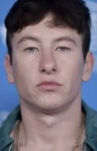
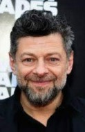

Galeria de fotos
- 
- 
Batman
Após testemunhar o assassinato de seus pais ainda quando criança, o que o fez jurar vingança contra os criminosos e treinar todos os dias sozinho, além de criar um personagem baseado em um morcego para combater o crime. Foi aí que surgiu Batman, o super-herói da cidade de Gotham.